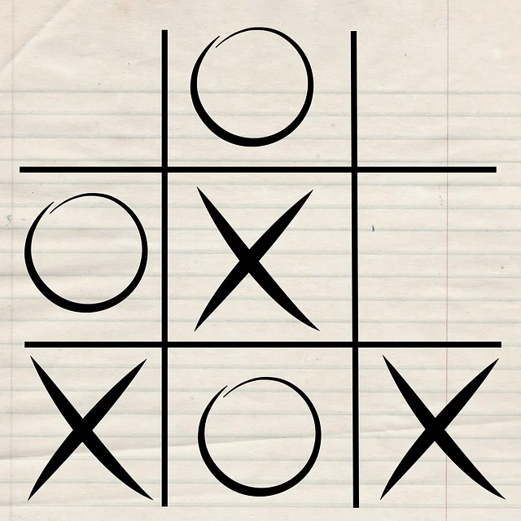

Présentation
Après avoir travaillé dans les domaines des espaces verts et du BTP, dans lesquels j’occupais un poste d’ouvrier, je souhaite maintenant me former aux métiers de la programmation informatique et trouver une alternance dans le cadre de ma formation à l’école La Plateforme Marseille, pour les 2è et 3è années. J’aspire à monter en compétences, quelles soient techniques ou relationnelles, dans le métier de programmeur gameplay. Je souhaite intégrer un studio de développement dans lequel je pourrai apprendre et évoluer.
Mes réalisations
Jeu du morpion en Python
Travail de groupe : créer des fonctions Python pour jouer au "morpion".
Site de fan
Création d'un site de fan en utilisant HTML et CSS.
Git et GitHub
Utilisation de Git et GitHub pour nos projets de groupe.
Les valeurs qui comptent pour moi
Je suis quelqu’un de sérieux, concerné et investi. L’honnêteté et le travail sont des valeurs qui comptent pour moi.
Mes objectifs pour la suite
Après avoir acquis un peu d’expérience grâce à l’alternance puis obtenu mon diplôme, je souhaite travailler dans un studio de développement et continuer à progresser dans le domaine de la programmation de jeux vidéo. Peut-être évoluer vers un poste avec des responsabilités plus tard ou travailler à l’étranger.